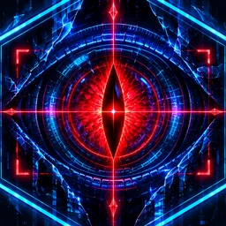
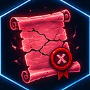
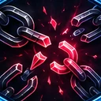
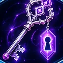
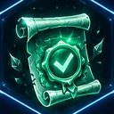
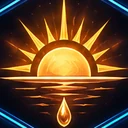

Sistema vivoEle vê tudo. E fala contigo.
O Sistema não espera que abras o jogo para te dizer alguma coisa. Comenta o teu dia, dá ordens, castiga quem falha e lembra-se de tudo.
Uma voz própria
Mais de 700 conversas, com três respostas à escolha em cada uma. O Sistema reage ao que fazes: às missões cumpridas e falhadas, aos chefes, aos baús, às horas a que jogas.
- Fala contigo sozinho a cada 15 minutos de uso
- Nunca aparece a meio de um duelo
- Conversas longas ligadas à história do jogo, que só acontecem uma vez
- Lembretes no telemóvel aos 30, 20 e 10 minutos do prazo
Aceitas?
A primeira coisa que o Sistema te pergunta. E a resposta que ele aceita.
O que o Sistema faz sem pedir licença

Missões de emergência
Até duas por dia, entre as 08:00 e as 22:00: «Faz 15 flexões», «Bebe um copo de água», «Responde à mensagem que andas a evitar». Têm tempo limite e recompensa à altura.

Zona de Penalidade
Falhar a Missão Diária abre uma missão de castigo de 24 horas, a dobrar. Cumpri-la recupera metade do que perdeste.

Missões Ocultas
Não aparecem em lado nenhum até as desbloqueares com o teu comportamento. Dão recompensas raras.

Relatório semanal
Ao domingo, o Sistema dá-te uma nota de E a S pela semana, um comentário e um prémio.
O Sistema está a ver
Uma missão sem sentido é recusada. Uma missão concluída depressa demais é notada. Uma Diária falhada abre a Zona de Penalidade. Vê como ele reage, em menos de 40 segundos.
Vigilância e Integridade
O Sistema lê o que escreves. Missões sem sentido («asdasd», «teste») são recusadas com um alerta. Criar e concluir missões em poucos minutos, repetidamente, reduz e depois anula a recompensa.
A tua Integridade vai de 0 a 100%. Desce com cada abuso e sobe com missões legítimas e a cada novo dia. Abaixo de 80%, as recompensas descem.
«Ler 20 páginas» foi concluída 2 minutos depois de ser criada. Não há livro que se leia tão depressa.
O relógio do Sistema
O jogo segue a hora real. Alguns itens só funcionam numa fase do dia e alguns chefes ficam mais fortes de dia ou de noite.

Manhã05:00 às 11:59Deixa o Sistema escolher-te
Ele já está à espera. Só falta o teu código de ativação.